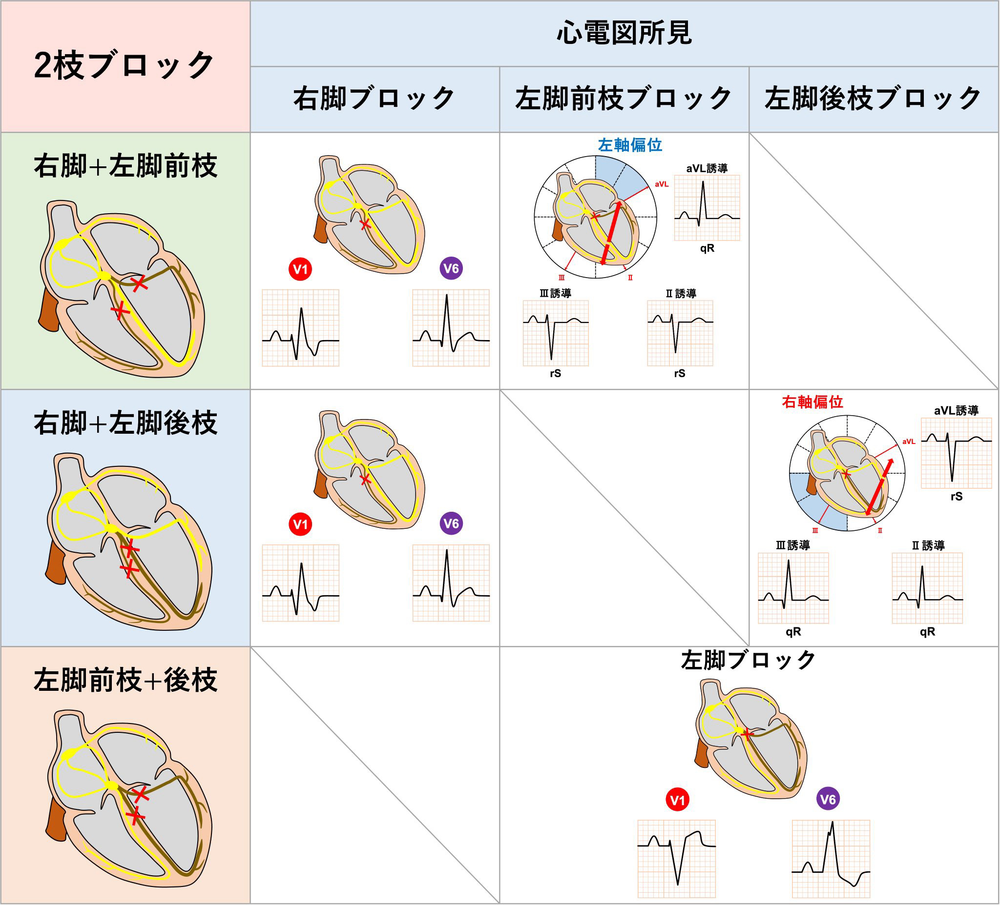
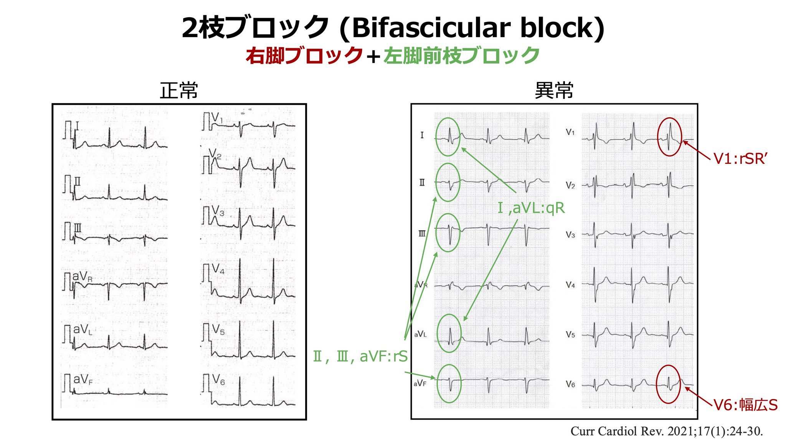
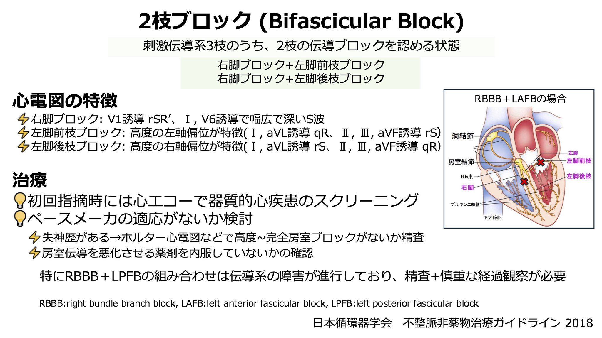

✔️虚血
側壁梗塞：Ⅰ，aVLでST上昇
下壁梗塞：右冠動脈近位の場合，V3R・V4RでST上昇
☆対側性変化（ミラーイメージ）…V1-3,Ⅰ,aVL↔︎Ⅱ,Ⅲ,aVF ST低下があれば対側のST上昇を疑う．
V1-V4でST上昇→aVRのST上昇の有無
＋：左冠動脈主幹部（Ⅰ,aVLも）
－：LAD（Ⅰ,aVL＋：近位，Ⅰ,aVL－：遠位）
※早期再分極症候群 上方凹型のST上昇．Ⅱ,Ⅲ,aVFにJ波あり，若年男性に多い疾患．
✔️脚ブロック
右脚：V1でrSR'波，wideQRS
左脚：V1でwideQRS
前枝：左軸偏位，Ⅱ,Ⅲ,aVFでrS波
後枝：右軸偏位，aVLでrS波
1度房室ブロック（PR延長）が重なると3枝ブロック



✔️その他
たこつぼ心筋症：広範なST上昇，対側性変化なし
亜急性期には巨大な陰性T波
不整脈原性右室心筋症(ARVC)：V1-V3にε波(QRS終末のノッチ)，持続的陰性T波がみられる．